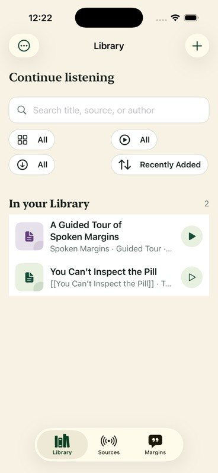
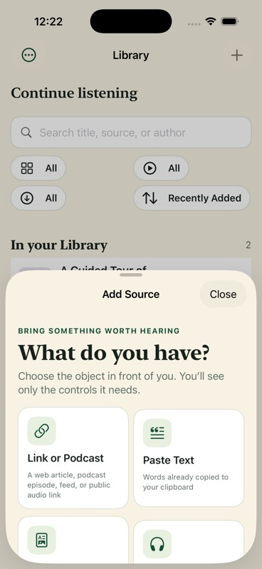
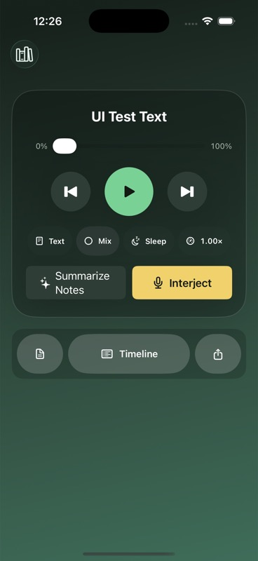
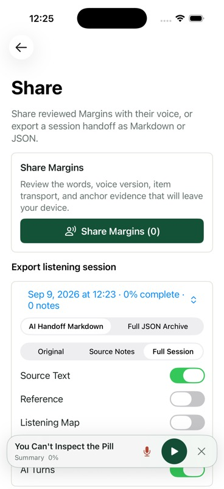

1.
Make the next step clear.
Each moment has one leading action: Add, Listen, Save & resume, or Review. Advanced controls remain available in the context where they help.
Choose an item. Keep a thought. Find it again. The revised screens begin with the content and controls for those tasks.
Removed the slogans, introductory blocks, oversized resume card, and repeated source context inside the app. Standardized compact rows and kept the warm palette and readable typography.
Useful content appears before a preliminary scroll. A saved thought can be found again. Browsing a note leaves playback alone. Large text stays readable and primary actions stay reachable.
Explore 20 states and the demanding examples ↓ · Read the comparison checks
Audio keeps moving. The listener’s attention is limited. The product earns its place when a thought can become a useful note without breaking the thread of listening.
Spoken Margins already connects articles, podcasts, files, spoken notes, source positions, and session exports. Its main UX risk is the work required to understand how those pieces fit together.
The proposal reduces that interpretation cost. A familiar Library gets someone listening. A focused player makes capture obvious. A notebook brings the listener’s own words back into view.
“I can keep a thought, continue listening, and understand it tomorrow.”
This is a hypothesis about value, not a claim from user interviews. The acceptance tasks in chapter 11 test it directly.
Each moment has one leading action: Add, Listen, Save & resume, or Review. Advanced controls remain available in the context where they help.
A note carries the item, the listening moment, and bounded source context. Looking at an old note never silently replaces current playback.
Saved audio, a transcript, an offline download, and a matched shared Margin are different promises. The interface makes each one legible.
| Layer | What matters | Design consequence |
|---|---|---|
| People & attention | A listener with divided attention; later, the same person trying to retrieve an idea. A sender and a recipient have different trust decisions. | Large reachable capture; recognition over recall; previews before something leaves the device. |
| Durable resources | Original items, personal recordings, session positions, user text and imported commentary layers. | Preserve ownership and context. Separate an original from replaceable generated audio. |
| Work & mechanisms | Import, resolve, prepare, play, record, transcribe, match, review and export may finish at different times. | A single busy state cannot explain the system. Each pending step gets an honest status and recovery. |
| Surfaces | iPhone and iPad; native player and Live Activity; Safari/Share intake; headphones and system transport. | Keep the same listening context across surfaces. Put setup and review where there is room. |
| Constraints | iOS 18+; local-first; optional device intelligence; partial offline preparation; real media time differs from live text position. | No cloud-dependent core loop, fictional seek times, mandatory maps, or full podcast transcript reader. |
| Evidence & decisions | Simulator and code show the implementation. Humans establish comprehension and real-world value. | Every recommendation names its evidence and a task that could prove it wrong. |
Keep deliberate imports, persistent playback, separate commentary ownership, audio-first capture, protected originals, recoverable deletion, and the owner’s accepted automatic completion behavior. The redesign should make these strengths easier to understand.
These are behavioral hypotheses drawn from the product’s documented purpose. They describe situations to test, without inventing demographic personas or interview findings.
“I have a thought. Don’t make me lose it.”
“Help me find what I was thinking about.”
“Share my thinking without losing what it belongs to.”
| Moment | User’s question | What the interface should answer | Evidence of success |
|---|---|---|---|
| Bring something in | Can I listen to this? | Recognize the input, preserve its identity, show what was added and what is playable. | Correct item imported once; current listening context preserved. |
| Choose & begin | Where was I? Will it play? | One resume action; truthful offline state; duration only when supportable. | The intended item begins at its saved position. |
| Capture | How do I keep this thought? | One tap to record, visible saved position, one tap to save and resume. | Original audio retained and return context correct. |
| Come back | Why did this matter? | Note-first retrieval with the item and nearby source context. | The person can explain the note without hunting for the source. |
| Use it elsewhere | What will leave my device? | Intent-based export with an exact, inspectable preview. | Recipient or destination gets only the chosen material. |
Low vision, one-handed use, speech differences, fatigue, a noisy room, and a silent setting all change what “easy” means. A typed Margin would be a useful extension for silent or speech-constrained use, but it requires a separate product decision and implementation.
The recurring problem is interpretation: which “All,” what “source,” what “ready,” which session, and what will export. The screens below are actual simulator captures of the current development candidate.
iPhone 17 Pro · iOS 26.5 · development 0.1 (26). The candidate includes existing uncommitted presentation changes. Most flows use test fixtures; recording, generated turns, and persisted onboarding progress have explicit limits. Read the evidence boundary.




S1 = task or trust risk · S2 = substantial friction · S3 = refinement. Impact is expert judgment, not measured prevalence. “Observed” establishes the interface, not that real users failed.
The three resource roots are coherent. The player stays accessible while browsing. Recording has an exclusive state and generous controls. Followed entries require a deliberate add. Note copying and transcript retry exist. Deletion and storage preserve irreplaceable work. These strengths should remain visible through the redesign.
Keep the product’s existing resource boundaries. Make the naming and task transitions clearer. The player remains persistent context across all three places.
Continue, choose, add, and manage listening items.
Items · Progress · Offline readinessBrowse new feed entries and Quick Folder candidates before deciding to add them.
Proposed Sources label · Explicit importsRetrieve your notes, inspect their context, and prepare them for use elsewhere.
My notes · Shared layers · ReviewA persistent bar opens the full player. Browsing another item or an old note does not silently replace it.
Paste a link or text, choose a file, or add a followed entry.
Start or resume with the correct source and playback mode.
Save the thought at the moment it occurs.
Keep the recording and return to listening with context.
Find the note, revisit the moment, and use it elsewhere.
No algorithmic discovery feed, account system, listening streaks, or mandatory AI layer is needed to make this loop valuable. The original item and the listener’s own thinking stay at the center.
Naming tradeoff: “Following” clarifies subscriptions but is less literal for Quick Folder. Retain a visible Quick Folder label and test this structure against the existing “Sources” root before changing it.
Open the editable experience map (.drawio) ↗Keep search, clear filters, and recognizable items together. No welcome slogan or oversized summary stands between the listener and their Library.
A compact current-item row shows the saved position and a direct play action. Once playback is active, its persistent bar is available across roots. An empty Library offers Add and an optional sample.
Type, progress, and availability move into one sheet. The selected count makes filtering visible. Sort stays separate.
Compact type marks support scanning. Title and publisher do the work. No fabricated cover art, creator identity, or listening duration is required.
Done items remain findable, with Review and Replay kept distinct from Continue. Existing filtering behavior is a release decision, not a silent design cleanup.
Open the native sheet directly on Link, Text, and Files. Put supported types beside each choice. Start a form only after an input is chosen.
For a simple, unambiguous input, add immediately and confirm in context. The full preview shown here is useful when extraction or identity needs review; it should not become a mandatory extra step for every paste.
“Added to Library” confirms persistence. “Play now” describes availability. “Preparing offline audio” describes background work. Import never unexpectedly starts playing.
An image-only PDF gets a specific unsupported-text explanation and an alternate input route. The prototype does not imply that OCR is implemented.
The player should need almost no explanation. Hear the source. Move within it. Save the thought. Everything else takes a supporting role.
“Add a Margin” makes the saved object explicit. One first-use hint explains that a Margin is a note attached to this moment. Capture stays in the lower action area, clear of scrollable content.
Keep the original recording, show a brief saved confirmation, and resume from the app’s existing context policy. Transcription can finish later without blocking listening.
Native audio uses elapsed/remaining time and timed skips. Live text uses section/paragraph position. Generated voice, shared commentary, and source playback display their owner and a clear Return to source action.
Keep speed near transport. Sleep, voice, and mixing remain in a small options surface. Mix must explain its system-control consequence at opt-in and preserve the currently authorized attenuation behavior.
Margin saved · Transcribing on this device. A gentle visual confirmation keeps the player usable. If transcription fails, say Your recording is safe. Transcript unavailable. and place Retry with the note. The fixture-induced failure observed during this audit does not establish a production defect.
Summaries belong in Review after there are notes to summarize. A listening map is helpful navigation when available. Neither should be a prerequisite to pressing Play or recording a thought.
A proposed Type a note route would support quiet places and people who cannot use speech. Until implemented, permission recovery should still offer Open Settings and Keep listening with the current position preserved.
Move from an event archive to a place for remembering. Preserve the complete Timeline, while making personal thoughts easier to retrieve and understand.
Readable note excerpts lead in a continuous list. Item, position, and date support recognition. Search matches sample personal notes and their item titles; Shared remains a distinct scope.
Keep Source context one explicit step away. Show a bounded passage when present or an audio-position reference when no transcript exists. The note itself is readable immediately.
“Play this moment” names the action that changes listening. Opening a note merely opens it. Preserve the previous item’s position if playback switches.
Summarize eligible notes on device, or copy to another chatbot and paste its response back. Label every generated or imported response and keep the original Margins unchanged.
Copying a note, sharing commentary, and exporting an archive are different tasks. A focused chooser leads to a preview appropriate to each. The second edition removes decorative copy above the actual inclusion choices.
The compact visual shown here is the final summary, not a replacement for per-Margin Include, voice selection, optional cleanup, progress/cancel, and reversible review. Private sharing notes remain private.
A received file can pass integrity checks without verifying the sender’s claimed name. Source identity and position matching are separate checks again.
Missing media prompts for the required source. Unmatched notes are not silently placed. Import never autoplays; shared-Margin playback remains controlled by the recipient.
Release boundary: these screens are a design study of trusted sharing. They do not authorize public distribution, expand the direct-share rights policy, or clear the current external-sharing gate.
Open an item, capture a thought, and return to the saved note. Then try a long title, an empty Library, 50 Margins, and larger text. The explanations stay outside the phone.
Open the full-screen prototype ↗
Interactive design model only. Buttons demonstrate navigation and local UI state. It does not play or record audio, import a real file, access the clipboard, send anything, or call an AI model. Larger text is a web layout preview, not proof of native Dynamic Type behavior.
The print edition includes the static design plates; open this HTML book for the clickable prototype.
A beautiful happy path is insufficient. Every promise needs a visible state, a recovery action, and a clear boundary around the user’s saved work.
Follow a source to see new entries here. Add only the ones you want to listen to.
Follow a source · Connect Quick Folder“You’re caught up” is reserved for a configured inbox that actually has no new entries. A filter-empty state offers Clear filters.
Offline audio is still preparing. Keep the app available to finish.
Play now · View preparationUse this only where the actual item can play now. Missing source media instead says Needs connection or Choose source. Never describe a partial render as fully ready offline.
Your listening position is saved. Enable access in iOS Settings, then return here.
Open Settings · Keep listeningPreserve the source state. “Type instead” is an additional design proposal that needs a real native path before being advertised.
The transcript isn’t available yet. You can still listen to the recording.
Play recording · Retry transcriptDo not make the user repeat an irreplaceable thought because a replaceable representation failed. Show this only after recording persistence succeeds.
Your source position is unchanged. Free space and try again.
Manage storage · Return to listeningNever show “Margin saved” until persistence is confirmed. Preserve any recoverable temporary audio; a typed fallback is useful only if implemented and storage permits.
The Margins are intact. Choose the matching source before placing them in your audio.
Choose another file · Cancel importSeparate source identity, position confidence, and package integrity. Do not promote ambiguous placement to a confident timestamp.
The listening session is saved.
Review Margins · Back to LibraryKeep the accepted automatic session closure and Library return. Offer review as a nonblocking Library entry rather than an unavoidable modal.
The item, its sessions and Margins can be restored.
Undo · Recently DeletedFreeing generated/downloaded audio is a separate action from deleting an item. Name protected originals and note recordings in storage confirmation.
| Condition | Expected behavior | Evidence still required |
|---|---|---|
| Call or Bluetooth interruption | Pause truthfully, preserve the open session, show the active route when useful. Never interpret an interruption as completion. | Physical-device route and headset checks. |
| App exits while work is pending | Reconcile saved state; resume eligible work; keep cancel/retry available. Do not quietly claim completion. | Kill/relaunch and persistence tests with real media. |
| Optional intelligence unavailable | Explain why at the summary action. Listening, capture, review and exports remain complete paths. | Supported and unsupported device checks. |
| Skim or shared voice playing | Identify the voice/summary owner. Provide Return to source with a clear original-source position. | Native transport and real source-alignment evidence. |
| Many items / long text / long names | Keep useful identity visible, allow wrapping and search, preserve active player clearance, bound background work. | Large real-library and longest-label checks. |
| Safari PDF / ambiguous episode | Specific progress, matching/selection, and recoverable failure. A successful file import does not prove a Safari share path. | Exact extension flow and source-resolution scenarios. |
Keep the app’s recognizable green and editorial character. Reduce competing containers, standardize utility surfaces, and use emphasis to communicate purpose.
Color supplements words, icons and ownership labels. “Shared by …” and “Generated summary” must remain distinct even when both use a plum accent.
Use the system serif for item titles and a few section headings. Do not multiply eyebrows, title repetitions, and explanatory subtitles. Long names wrap naturally.
Use native system text styles for actions, paragraphs and metadata. Target 17 pt body in the iOS implementation, with semantic Dynamic Type scaling. Web plates are illustrative, not literal SwiftUI dimensions.
Apple recommends adaptable interfaces and accessible controls; WCAG supplies a useful explicit check for the web book: at least 4.5:1 normal-text contrast and 3:1 for qualifying large text. These are design criteria, not a completed conformance claim. Apple accessibility guidance · W3C contrast requirements.
3 illustrative items
“A useful note preserves the question I had, not just the sentence I heard.”
The value of a note grows when we can return to the moment that prompted it.
At wide widths, show navigation, selection and detail together. Collapse to a familiar stack as the window narrows. Keep transport associated with the active item across selections. This is a design proposal; the native tablet walkthrough is recorded separately in the evidence appendix.
The maximum-size simulator pass showed the cost of an oversized coach and several large filters before the first item. The remedy is fewer simultaneous controls and linear layouts. Shrinking text back down would defeat the user’s preference.
Sequence by dependency and risk. A calmer appearance cannot compensate for a misleading saved state, inaccessible action, or source that does not play.
| Alternative | What it solves | What it leaves / risks | Decision |
|---|---|---|---|
| A · Presentation polish | Spacing, tint, contrast, and label fixes at low implementation cost. | Export decisions, note retrieval and repeated concepts remain. Useful immediately, insufficient as the full direction. | Do first for bounded defects. |
| B · Task-first listening notebook | Clarifies intake, capture, review and sharing while preserving existing domain ownership. | Needs navigation decisions, focused retrieval work and careful transition coverage. | Recommended hypothesis. |
| C · Broader audio / AI platform | Could add discovery, social or conversation features. | Introduces new actors, services and trust boundaries before proving the core loop. High scope and release risk. | Defer. |
Exit: no false saved/offline state; all primary actions reachable; current core regressions remain green. Follow existing lane authorization.
Exit: the owner completes Add → Listen → Margin → Review → Export without coaching or a playback/context regression.
Exit: old-note retrieval works at realistic volume; shared content cannot be confused with personal or original-source material.
Broader redesign, root naming, export relocation, search, typed capture and gesture changes need an explicit product-owner decision. Record that decision in docs/release-lanes.md before native implementation. No new runtime commands, schemas or persistence fields are introduced by this artifact.
| Task | Proposed acceptance signal | Fail / rethink when |
|---|---|---|
| First useful listen | Import a short text and begin the correct item without explanation. Aim for ≤3 explicit choices after opening Add, excluding typing and OS file selection. | The review screen becomes an unnecessary stop for clear inputs, or Play changes another session silently. |
| Capture in the moment | Two app actions: enter recording, then Save & resume; first-time OS permission excluded. User can predict what is saved. | Summary or navigation distracts from capture; the return loses source context; the note is falsely marked saved. |
| Recover from denial | From microphone denial, find a recovery route and return to listening without losing the original position. | The user searches through unrelated app settings, or the denied action leaves a stuck recording screen. |
| Retrieve a thought | Find a specified personal note among 50 notes and explain its source context. Proposed initial target: within 30 seconds. | Search mixes ownership or omits expected notes; a chronological view is faster and clearer than the proposed organization. |
| Prepare to be offline | Correctly predict which items will play with no connection, then verify on a physical device. | Any partial render or missing media is advertised as Ready offline. |
| Share deliberately | Predict exactly which notes, voice versions and source material leave the device before opening the share sheet. | Scope is wrong, identity is overstated, private sharing notes leak, or unsupported source material is included. |
| Large text & tablet | Complete the same core loop with maximum Dynamic Type and a narrow iPad window. No clipped meaning or hidden-only actions. | Text is reduced to fit, actions overlap, focus jumps unpredictably, or the player changes the wrong item. |
Use the same sample items and tasks in the current app and concept. Record completion, assistance, wrong taps, context errors and confidence before asking for visual preference. Vary task order to reduce learning effects.
If the owner later wants outside research, recruit people representing listening, retrieval and accessibility needs. This audit did not recruit or observe human participants.
Stop a redesign slice when its acceptance tasks pass and no adjacent continuity, access, ownership or readiness invariant regresses. Do not add more features to rescue a confusing structure.
A native implementation would require fast/app checks, scoped UI evidence and appropriate audio adapter/canary gates for changed audio seams. A build is implementation evidence; owner use establishes human validation.
Provide the build number and exact commit, supported devices/OS, in-scope and excluded flows, known issues, reset instructions, seeded samples, diagnostics/export location, verification results, and a pass/fail checklist. Store accepted human evidence under the repository’s validation artifacts. This design book is not that release handoff.
The strongest design decisions explain both what supports them and what could change them. Use this appendix to separate the current implementation, the critique, and the proposed experience.
Version 0.1 (26), codex/provisional-next, base d8766c43bb0ae54ec15b3254679bba0a9378cd6e plus the existing compact-presentation working-tree diff. Fresh iOS Simulator build succeeded. This is not the distributed TestFlight 26 binary.
Phone: iPhone 17 Pro on iOS 26.5. Standard and maximum accessibility text sizes, light and dark Library. Most routes used app test fixtures; an ordinary launch also exposed the onboarding card and resumed coach.
Tablet coverage: source-reviewed adaptive navigation; the additional simulator result is recorded in the audit notes.
No recruited human study or product-owner acceptance took place. UI fixtures do not prove microphone quality, transcription reliability, AI availability, latency, or source fidelity. The fixture-induced transcript failure is used only to review state presentation.
VoiceOver, Switch Control, physical-device headphones/lock screen, long offline preparation, real cross-device sharing, Safari PDF intake and old-OS compatibility remain unverified by this audit.
docs/release-lanes.md governs active scope and overrides historical design references. Contracts/docs/recovery-mvp.md supplies the core listening boundary. Older prototype docs are used for intent, not current availability.
ExperienceLibraryScreen, ExperienceAddSourceFlow, ExperienceItemDetailScreen, Gate1RootView, ExperienceTimelineRailScreen, ExperienceMarginDetailView, ExperienceMarginsScreen, ExperienceSourcesScreen, ExperienceStorageScreen, and sender/recipient sharing views.
Nielsen Norman Group: Progressive Disclosure supports prioritizing common tasks and deferring secondary complexity. Applying that principle to this app is the audit’s inference.
Apple Human Interface Guidelines: Accessibility and W3C: Contrast Minimum inform design criteria. A full native or web conformance audit has not been performed.
| Area | Evidence level in this audit | Follow-up needed |
|---|---|---|
| Core phone UI | Observed traversal and screenshots; source cross-check. | Owner comprehension and real-device listening. |
| Recording & note persistence | Real denial flow; fixture recording/finish; source-backed preservation. | Actual speech, interrupted save, audio quality and durable recovery. |
| Intake | Actual pasted-text addition; other routes visually/source reviewed. | Safari, Files, EPUB, native audio and ambiguous podcast link examples. |
| Sharing / maps / Skim | Code-backed state and ownership review; illustrative proposal states. | Real sender/recipient review and verified source-time return. |
| Accessibility | Largest-size and dark phone Library; accessibility labels in snapshots. | VoiceOver, Switch Control, Increased Contrast and task-complete native coverage. |
| Scale / recovery | Small sample Library, completion, empty states; code review of queues/storage. | Large realistic libraries, offline states, app exit, disk pressure and interrupted operations. |